← 回股市觀察
逐檔技術線型分析
2026/09/18 · 成交金額上市前 50 名 ＋ 上櫃前 20 名（共 70 檔）· 公開資料整理
47180.75
加權指數 +892.75 點（+1.93%）
748 / 251
上市個股上漲／下跌家數
上漲 74.9% · 下跌 25.1%（共 999 檔）
統計範圍：當日成交金額上市前 50 名 ＋ 上櫃前 20 名（共 70 檔，皆為 4 位數代號的個股，不含 ETF／權證）。
兩個市場各自取前 N 名後合併呈現，卡片上標示市場別（上市／上櫃），清單也附市場分布。
條件統計：上市 上升趨勢：底底高 ＋ 頭頭高 11 檔、突破頸線 16 檔、跌破前低（線型轉弱） 5 檔、底底高 20 檔、頭頭高 17 檔、站上月線 31 檔、月線向上 32 檔、外資買超 28 檔、量價攻擊（收紅＋大量） 32 檔；上櫃 上升趨勢：底底高 ＋ 頭頭高 3 檔、突破頸線 9 檔、跌破前低（線型轉弱） 1 檔、底底高 4 檔、頭頭高 8 檔、站上月線 16 檔、月線向上 14 檔、外資買超 14 檔、量價攻擊（收紅＋大量） 15 檔。
五項全滿足（底底高＋頭頭高＋站上月線＋月線向上＋5 日線向上）：上市 聯電、創意、台新新光金、中信金；上櫃 欣銓、信昌電。
資料日 2026/09/18。籌碼：上市為證交所三大法人、上櫃為櫃買中心三大法人；上櫃另附融資餘額。
每一檔都附上 K 線圖與線型說明：黃圈是轉折低點、粉圈是轉折高點、藍線是月線。
圖上兩條水平虛線、左側標數值：高點頸線（紅，連到最多「轉折高點」的那條水平線，代表上方壓力帶；收盤站上就算突破）與
低點頸線（綠，連到最多「轉折低點」的那條水平線，代表下方支撐帶；收盤跌破就算跌破）；
兩條線都只看最近 6 個轉折點、容忍同一價位帶 4%，連不到 2 個轉折點就不畫。
卡片的標籤可以點回上方對應清單，清單裡的股名也可以點到該檔。
本頁為公開資料（證交所每日收盤行情與三大法人、櫃買中心每日收盤行情與三大法人、Yahoo 股市日線）的整理與觀察，
不構成投資建議，不報牌、不預測、不下買賣決策。
大盤趨勢快篩（加權指數） 資料日 2026/09/18・來源：證交所公開資料
主狀態：突破頸線且帶量
前一交易日對照（09/17）：站上月線、月線向上（量比 20 1.00） → 今日突破頸線且帶量（量比 20 1.28）
指標、數值、判定（點開看 12 項明細：均線位置／排列、月線方向、頸線、轉折結構、位階、量價…）
加權指數今天漲 892.75 點（+1.93%），收 47,180.75、站上月線 46,257.71；月線還在上彎，已站上高點頸線 46,977.91。
- 均線位置：收盤在 MA5、MA10、MA20、MA60 之上（4 條全部站上）
- 月線方向：月線 MA20 現在 46,257.71，比 5 個交易日前高 232.42 點 → 上彎
- 量能：集中市場成交 11,423.2 億，比 5 日均量大不少（1.43 倍）、比 20 日均量大不少（1.28 倍）
- 關鍵價位：高點頸線 46,977.91已突破；低點頸線 44,592.92，還在下方 5.80%
- 大小型股：加權 +1.93%、櫃買 +3.64%，兩邊同向

圖說：加權指數日 K（與個股圖相同標記）：黃圈＝轉折低點、粉圈＝轉折高點、虛線小圈＝還沒確認的轉折、藍線＝月線 MA20、水平虛線＝高點／低點頸線。最後一根是資料日當天。
本區塊為公開資料的技術面觀察，不構成投資建議，
不報牌、不預測、不下買賣決策。成交金額為集中市場總成交金額（含 ETF／權證），
與頁首摘要的「上市個股成交金額」口徑不同。標籤是統計，不是評分、也不是推薦。
上市 vs 上櫃（同期快篩）
加權 +1.93% vs 櫃買 +3.64%（同向） → 同向
（兩個市場分開寫，不合併成一個數字；櫃買為 TPEX 公開資料）
櫃買歷史：TPEX 逐日回補 130 根；來源：櫃買中心 www/zh-tw/indexInfo/sectinx（逐日，官方；OpenAPI tpex_index 只回當月）
（TPEX OpenAPI 只回當月，故逐日回補；歷史不足就不算該條均線並標「資料不足」，不用錯數字）
近 20 個交易日大盤狀態回溯（最新在上）（點開看逐日主狀態／量比／量價象限）
用同一支程式回算最近 20 個交易日（主狀態 S1~S8 與量比 20 皆為當日收盤當時的判定，
不是事後調整）；量比 20 未公布的日子寫「—」。
好條件最多的（前 10）
不好條件最多的（前 10）
好條件（8 項）：站上月線、月線向上、底底高、頭頭高、突破頸線、相對大盤強、外資買超、量價攻擊（收紅＋大量）。
不好條件（8 項）：跌破前低、今日下跌、相對大盤弱、在月線之下、量增下跌（出貨）、外資賣超、月線下彎、收盤跌破前一日低點。
兩邊都是同一組資料（日線結構＋當日收盤量價籌碼）算出來的「符合項目數」，只是方向相反；
條件數不是評分、也不是推薦，不構成投資建議。
上升趨勢：底底高 ＋ 頭頭高（14 上市 11／上櫃 3）
量價攻擊（收紅＋大量）（47 上市 32／上櫃 15）
逐檔分析（70 檔）
底部墊高、未過前高 成交金額 1003.94 億・全榜第 1 名（上市第 1 名）
好條件 6/8：站上月線、月線向上、底底高、突破頸線、外資買超、量價攻擊（收紅＋大量）
不好條件 1/8：相對大盤弱

今天帶量收紅、站上月線 2416.75，已站上高點頸線 2447.5，底部還在墊高（但高點沒同步創高）。
- 月線位置：收盤 2460 在月線 2416.75 之上；5 日線 2406 也在月線之下（短均在下）；月線向上、5 日線走平或向下
- 量能：成交量是 20 日均量的 2.17 倍，比 20 日均量大不少；收紅又量增，量價配合
- 關鍵價位：高點頸線 2447.5 已站上；最近轉折高點 2505（低於 1.8%）；最近轉折低點 2375（高於 3.6%）
- 轉折結構：低點 2335、2350、2375 墊高 1.7%（底底高），但高點 2445、2445、2505 沒有同步創高；還沒確認的轉折低點 09-14 2380、09-16 2375；還沒確認的轉折高點 09-15 2405、09-18 2460（圖上虛線小圈）
高點墊高、底部不穩 成交金額 483.13 億・全榜第 2 名（上市第 2 名）
好條件 7/8：站上月線、月線向上、頭頭高、突破頸線、相對大盤強、外資買超、量價攻擊（收紅＋大量）
不好條件 0/8：無

今天帶量收紅、站上月線 4334.75，已站上高點頸線 4090，高點還在墊高（但底部沒同步墊高）。
- 月線位置：收盤 4710 在月線 4334.75 之上；5 日線 4546 也在月線之上（短均在上）；月線向上、5 日線走平或向下
- 量能：成交量是 20 日均量的 1.43 倍，比 20 日均量大不少；收紅又量增，量價配合
- 關鍵價位：高點頸線 4090 已站上；最近轉折高點 4855（低於 3.0%）；最近轉折低點 4430（高於 6.3%）
- 轉折結構：高點 4125、4400、4855 墊高 17.7%（頭頭高），但低點 3810、3655、4430 沒有同步墊高；還沒確認的轉折低點 09-10 4520；還沒確認的轉折高點 09-18 4735（圖上虛線小圈）
上升趨勢（底底高＋頭頭高） 成交金額 478.77 億・全榜第 3 名（上市第 3 名）
好條件 8/8：站上月線、月線向上、底底高、頭頭高、突破頸線、相對大盤強、外資買超、量價攻擊（收紅＋大量）
不好條件 0/8：無

今天帶量收紅、站上月線 134.7，已站上高點頸線 144，轉折結構仍是底底高＋頭頭高。
- 月線位置：收盤 156 在月線 134.7 之上；5 日線 145.3 也在月線之上（短均在上）；月線向上、5 日線向上
- 量能：成交量是 20 日均量的 1.72 倍，比 20 日均量大不少；收紅又量增，量價配合
- 關鍵價位：高點頸線 144 已站上；最近轉折高點 145.5（高於 7.2%）；最近轉折低點 135（高於 15.6%）
- 轉折結構：低點 117、123、135 一路墊高 15.4%、高點 128、136.5、145.5 也一路墊高 13.7%，是底底高＋頭頭高；還沒確認的轉折低點 09-16 138；還沒確認的轉折高點 09-14 143.5、09-18 160.5（圖上虛線小圈）
區間或轉弱 成交金額 413.17 億・全榜第 4 名（上市第 4 名）
好條件 4/8：站上月線、相對大盤強、外資買超、量價攻擊（收紅＋大量）
不好條件 1/8：月線下彎

今天帶量收紅、站上月線 509.225，離高點頸線 539.25 還差 2.6%，轉折還沒走出明顯方向。
- 月線位置：收盤 525 在月線 509.225 之上；5 日線 488.8 也在月線之下（短均在下）；月線走平或向下、5 日線走平或向下
- 量能：成交量是 20 日均量的 1.23 倍，比 20 日均量大不少；收紅又量增，量價配合
- 關鍵價位：高點頸線 539.25 還沒突破，差 2.6%；最近轉折高點 540（低於 2.8%）；最近轉折低點 465.5（高於 12.8%）
- 轉折結構：低點 480、470、465.5 與高點 553、569、540 都沒有明顯遞增，屬於區間震盪或轉弱；還沒確認的轉折高點 09-03 539、09-18 525（圖上虛線小圈）
區間或轉弱 成交金額 245.35 億・全榜第 5 名（上市第 5 名）
好條件 4/8：站上月線、相對大盤強、外資買超、量價攻擊（收紅＋大量）
不好條件 1/8：月線下彎

今天帶量收紅、站上月線 176.275，離高點頸線 188.3 還差 4.7%，轉折還沒走出明顯方向。
- 月線位置：收盤 179.5 在月線 176.275 之上；5 日線 167.6 也在月線之下（短均在下）；月線走平或向下、5 日線走平或向下
- 量能：成交量是 20 日均量的 1.10 倍，比 20 日均量大一些；收紅又量增，量價配合
- 關鍵價位：高點頸線 188.3 還沒突破，差 4.7%；最近轉折高點 192（低於 6.5%）；最近轉折低點 158.5（高於 13.2%）
- 轉折結構：低點 168.5、165.5、158.5 與高點 192、192、192 都沒有明顯遞增，屬於區間震盪或轉弱；還沒確認的轉折高點 09-03 185.5、09-17 180（圖上虛線小圈）
區間或轉弱 成交金額 226.43 億・全榜第 6 名（上市第 6 名）
好條件 3/8：相對大盤強、外資買超、量價攻擊（收紅＋大量）
不好條件 2/8：在月線之下、月線下彎

今天帶量收紅、跌破月線 1749，離高點頸線 1955 還差 11.3%，轉折還沒走出明顯方向。
- 月線位置：收盤 1735 在月線 1749 之下；5 日線 1684 也在月線之下（短均在下）；月線走平或向下、5 日線走平或向下
- 量能：成交量是 20 日均量的 1.35 倍，比 20 日均量大不少；收紅又量增，量價配合
- 關鍵價位：高點頸線 1955 還沒突破，差 11.3%；最近轉折高點 1885（低於 8.0%）；最近轉折低點 1560（高於 11.2%）
- 轉折結構：低點 1655、1725、1560 與高點 2005、1870、1885 都沒有明顯遞增，屬於區間震盪或轉弱；還沒確認的轉折高點 09-18 1750（圖上虛線小圈）
區間或轉弱 成交金額 216.29 億・全榜第 7 名（上市第 7 名）
好條件 4/8：站上月線、相對大盤強、外資買超、量價攻擊（收紅＋大量）
不好條件 1/8：月線下彎

今天帶量收紅、站上月線 6260.25，離高點頸線 6661 還差 1.8%，轉折還沒走出明顯方向。
- 月線位置：收盤 6540 在月線 6260.25 之上；5 日線 6248 也在月線之下（短均在下）；月線走平或向下、5 日線走平或向下
- 量能：成交量是 20 日均量的 4.79 倍，比 20 日均量大不少；收紅又量增，量價配合
- 關鍵價位：高點頸線 6661 還沒突破，差 1.8%；最近轉折高點 7160（低於 8.7%）；最近轉折低點 5620（高於 16.4%）
- 轉折結構：低點 6160、6060、5620 與高點 6960、6540、7160 都沒有明顯遞增，屬於區間震盪或轉弱；還沒確認的轉折低點 09-11 6210、09-17 6055；還沒確認的轉折高點 09-14 6470、09-17 6615（圖上虛線小圈）
底部墊高、未過前高 成交金額 195.68 億・全榜第 9 名（上市第 8 名）
好條件 3/8：站上月線、月線向上、底底高
不好條件 2/8：相對大盤弱、外資賣超

今天收紅、但成交量比平均少、站上月線 225.925，離高點頸線 245.12 還差 2.9%，底部還在墊高（但高點沒同步創高）。
- 月線位置：收盤 238 在月線 225.925 之上；5 日線 230.7 也在月線之上（短均在上）；月線向上、5 日線走平或向下
- 量能：成交量是 20 日均量的 0.91 倍，比 20 日均量少一些；收紅但量縮，量價背離
- 關鍵價位：高點頸線 245.12 還沒突破，差 2.9%；最近轉折高點 245.5（低於 3.1%）；最近轉折低點 220.5（高於 7.9%）
- 轉折結構：低點 174、218、220.5 墊高 26.7%（底底高），但高點 215、250、245.5 沒有同步創高；還沒確認的轉折低點 09-08 229；還沒確認的轉折高點 09-07 240、09-18 245（圖上虛線小圈）
上升趨勢（底底高＋頭頭高） 成交金額 190.44 億・全榜第 10 名（上市第 9 名）
好條件 7/8：站上月線、月線向上、底底高、頭頭高、突破頸線、相對大盤強、量價攻擊（收紅＋大量）
不好條件 1/8：外資賣超

今天帶量收紅、站上月線 6050.75，已站上高點頸線 6446.67，轉折結構仍是底底高＋頭頭高。
- 月線位置：收盤 7150 在月線 6050.75 之上；5 日線 6451 也在月線之上（短均在上）；月線向上、5 日線向上
- 量能：成交量是 20 日均量的 1.44 倍，比 20 日均量大不少；收紅又量增，量價配合
- 關鍵價位：高點頸線 6446.67 已站上；最近轉折高點 6490（高於 10.2%）；最近轉折低點 5850（高於 22.2%）
- 轉折結構：低點 5205、5680、5850 一路墊高 12.4%、高點 4475、5990、6490 也一路墊高 45.0%，是底底高＋頭頭高；還沒確認的轉折低點 09-10 5850；還沒確認的轉折高點 09-14 6575、09-18 7150（圖上虛線小圈）
區間或轉弱 成交金額 184.82 億・全榜第 11 名（上市第 10 名）
好條件 3/8：相對大盤強、外資買超、量價攻擊（收紅＋大量）
不好條件 3/8：跌破前低、在月線之下、月線下彎

今天帶量收紅、跌破月線 5363.25，跌破前一個轉折低點（高點頸線 5267.5 還在收盤上方），轉折還沒走出明顯方向。
- 月線位置：收盤 4890 在月線 5363.25 之下；5 日線 5026 也在月線之下（短均在下）；月線走平或向下、5 日線走平或向下
- 量能：成交量是 20 日均量的 2.02 倍，比 20 日均量大不少；收紅又量增，量價配合
- 關鍵價位：高點頸線 5267.5 還沒突破、還在收盤上方 7.2%；最近轉折高點 5645（低於 13.4%）；最近轉折低點 5255（低於 6.9%）
- 轉折結構：低點 3930、5255、5255 與高點 6470、5960、5645 都沒有明顯遞增，屬於區間震盪或轉弱；還沒確認的轉折低點 09-11 5210、09-17 4635；還沒確認的轉折高點 09-07 5580、09-17 5255（圖上虛線小圈）
高點墊高、底部不穩 成交金額 181.66 億・全榜第 12 名（上市第 11 名）
好條件 4/8：月線向上、頭頭高、相對大盤強、量價攻擊（收紅＋大量）
不好條件 2/8：在月線之下、外資賣超

今天帶量收紅、跌破月線 6655，離高點頸線 6457.5 還差 0.4%，高點還在墊高（但底部沒同步墊高）。
- 月線位置：收盤 6430 在月線 6655 之下；5 日線 6145 也在月線之下（短均在下）；月線向上、5 日線走平或向下
- 量能：成交量是 20 日均量的 1.23 倍，比 20 日均量大不少；收紅又量增，量價配合
- 關鍵價位：高點頸線 6457.5 還沒突破，差 0.4%；最近轉折高點 7995（低於 19.6%）；最近轉折低點 5930（高於 8.4%）
- 轉折結構：高點 4175、4770、7995 墊高 91.5%（頭頭高），但低點 4230、6350、5930 沒有同步墊高；還沒確認的轉折低點 09-17 6020；還沒確認的轉折高點 09-16 6415、09-18 6500（圖上虛線小圈）
世芯-KY 3661 上市
3540 +245.0
區間或轉弱 成交金額 178.71 億・全榜第 13 名（上市第 12 名）
好條件 3/8：相對大盤強、外資買超、量價攻擊（收紅＋大量）
不好條件 3/8：跌破前低、在月線之下、月線下彎

今天帶量收紅、跌破月線 3856，跌破前一個轉折低點（高點頸線 4312.5 還在收盤上方），轉折還沒走出明顯方向。
- 月線位置：收盤 3540 在月線 3856 之下；5 日線 3425 也在月線之下（短均在下）；月線走平或向下、5 日線走平或向下
- 量能：成交量是 20 日均量的 2.47 倍，比 20 日均量大不少；收紅又量增，量價配合
- 關鍵價位：高點頸線 4312.5 還沒突破、還在收盤上方 17.9%；最近轉折高點 4350（低於 18.6%）；最近轉折低點 3585（低於 1.3%）
- 轉折結構：低點 3245、2630、3585 與高點 3720、4530、4350 都沒有明顯遞增，屬於區間震盪或轉弱；還沒確認的轉折低點 09-03 4010、09-17 3260；還沒確認的轉折高點 09-10 4075、09-18 3540（圖上虛線小圈）
底部墊高、未過前高 成交金額 177.81 億・全榜第 14 名（上市第 13 名）
好條件 6/8：站上月線、月線向上、底底高、相對大盤強、外資買超、量價攻擊（收紅＋大量）
不好條件 0/8：無

今天帶量收紅、站上月線 608.45，離高點頸線 639.67 還差 0.3%，底部還在墊高（但高點沒同步創高）。
- 月線位置：收盤 638 在月線 608.45 之上；5 日線 612.2 也在月線之上（短均在上）；月線向上、5 日線走平或向下
- 量能：成交量是 20 日均量的 1.70 倍，比 20 日均量大不少；收紅又量增，量價配合
- 關鍵價位：高點頸線 639.67 還沒突破，差 0.3%；最近轉折高點 653（低於 2.3%）；最近轉折低點 592（高於 7.8%）
- 轉折結構：低點 565、578、592 墊高 4.8%（底底高），但高點 643、630、653 沒有同步創高；還沒確認的轉折高點 09-07 628、09-18 643（圖上虛線小圈）
區間或轉弱 成交金額 174.07 億・全榜第 15 名（上市第 14 名）
好條件 6/8：站上月線、月線向上、突破頸線、相對大盤強、外資買超、量價攻擊（收紅＋大量）
不好條件 0/8：無

今天帶量收紅、站上月線 262.6，已站上高點頸線 285.15，轉折還沒走出明顯方向。
- 月線位置：收盤 291.5 在月線 262.6 之上；5 日線 267.3 也在月線之上（短均在上）；月線向上、5 日線走平或向下
- 量能：成交量是 20 日均量的 3.07 倍，比 20 日均量大不少；收紅又量增，量價配合
- 關鍵價位：高點頸線 285.15 已站上；最近轉折高點 283.5（高於 2.8%）；最近轉折低點 253（高於 15.2%）
- 轉折結構：低點 225、259、253 與高點 261.5、262、283.5 都沒有明顯遞增，屬於區間震盪或轉弱；還沒確認的轉折高點 09-07 278、09-18 291.5（圖上虛線小圈）
區間或轉弱 成交金額 152.16 億・全榜第 17 名（上市第 15 名）
好條件 3/8：站上月線、相對大盤強、外資買超
不好條件 1/8：月線下彎

今天收紅、站上月線 829.05，離高點頸線 850.5 還差 2.2%，轉折還沒走出明顯方向。
- 月線位置：收盤 832 在月線 829.05 之上；5 日線 810 也在月線之下（短均在下）；月線走平或向下、5 日線走平或向下
- 量能：成交量是 20 日均量的 0.97 倍，跟 20 日均量差不多
- 關鍵價位：高點頸線 850.5 還沒突破，差 2.2%；最近轉折高點 835（低於 0.4%）；最近轉折低點 784（高於 6.1%）
- 轉折結構：低點 766、766、784 與高點 960、835、835 都沒有明顯遞增，屬於區間震盪或轉弱；還沒確認的轉折低點 09-10 792、09-17 785；還沒確認的轉折高點 09-03 882、09-18 850（圖上虛線小圈）
區間或轉弱 成交金額 150.71 億・全榜第 18 名（上市第 16 名）
好條件 0/8：無
不好條件 7/8：今日下跌、相對大盤弱、在月線之下、量增下跌（出貨）、外資賣超、月線下彎、收盤跌破前一日低點

今天帶量收黑、跌破月線 1348.75，離高點頸線 1370 還差 13.9%，轉折還沒走出明顯方向。
- 月線位置：收盤 1180 在月線 1348.75 之下；5 日線 1195 也在月線之下（短均在下）；月線走平或向下、5 日線走平或向下
- 量能：成交量是 20 日均量的 3.29 倍，比 20 日均量大不少；收黑卻量增，量價背離
- 關鍵價位：高點頸線 1370 還沒突破，差 13.9%；最近轉折高點 1450（低於 18.6%）；最近轉折低點 1165（高於 1.3%）
- 轉折結構：低點 1345、1280、1165 與高點 1550、1645、1450 都沒有明顯遞增，屬於區間震盪或轉弱；還沒確認的轉折低點 09-07 1285、09-18 1180；還沒確認的轉折高點 09-03 1375、09-16 1225（圖上虛線小圈）
區間或轉弱 成交金額 146.42 億・全榜第 19 名（上市第 17 名）
好條件 2/8：相對大盤強、外資買超
不好條件 2/8：在月線之下、月線下彎

今天收紅、但成交量比平均少、跌破月線 552.2，離高點頸線 600 還差 8.3%，轉折還沒走出明顯方向。
- 月線位置：收盤 550 在月線 552.2 之下；5 日線 539.4 也在月線之下（短均在下）；月線走平或向下、5 日線走平或向下
- 量能：成交量是 20 日均量的 0.70 倍，比 20 日均量少很多；收紅但量縮，量價背離
- 關鍵價位：高點頸線 600 還沒突破，差 8.3%；最近轉折高點 605（低於 9.1%）；最近轉折低點 520（高於 5.8%）
- 轉折結構：低點 515、511、520 與高點 668、610、605 都沒有明顯遞增，屬於區間震盪或轉弱；還沒確認的轉折低點 09-10 543、09-16 526；還沒確認的轉折高點 09-15 558、09-17 553（圖上虛線小圈）
區間或轉弱 成交金額 143.06 億・全榜第 20 名（上市第 18 名）
好條件 2/8：相對大盤強、外資買超
不好條件 2/8：在月線之下、月線下彎

今天收紅、但成交量比平均少、跌破月線 1002.9，離高點頸線 998.8 還差 1.8%，轉折還沒走出明顯方向。
- 月線位置：收盤 981 在月線 1002.9 之下；5 日線 960.6 也在月線之下（短均在下）；月線走平或向下、5 日線走平或向下
- 量能：成交量是 20 日均量的 0.65 倍，比 20 日均量少很多；收紅但量縮，量價背離
- 關鍵價位：高點頸線 998.8 還沒突破，差 1.8%；最近轉折高點 1005（低於 2.4%）；最近轉折低點 932（高於 5.3%）
- 轉折結構：低點 1030、873、932 與高點 1005、1005、1005 都沒有明顯遞增，屬於區間震盪或轉弱；還沒確認的轉折低點 09-16 940、09-17 940；還沒確認的轉折高點 09-15 986、09-17 993（圖上虛線小圈）
上升趨勢（底底高＋頭頭高） 成交金額 142.38 億・全榜第 22 名（上市第 19 名）
好條件 3/8：月線向上、底底高、頭頭高
不好條件 6/8：今日下跌、相對大盤弱、在月線之下、量增下跌（出貨）、外資賣超、收盤跌破前一日低點

今天帶量收黑、跌破月線 483.3，離高點頸線 513 還差 7.8%，轉折結構仍是底底高＋頭頭高。
- 月線位置：收盤 473 在月線 483.3 之下；5 日線 481.9 也在月線之下（短均在下）；月線向上、5 日線走平或向下
- 量能：成交量是 20 日均量的 1.09 倍，比 20 日均量大一些；收黑卻量增，量價背離
- 關鍵價位：高點頸線 513 還沒突破，差 7.8%；最近轉折高點 550（低於 14.0%）；最近轉折低點 446.5（高於 5.9%）
- 轉折結構：低點 368、421.5、446.5 一路墊高 21.3%、高點 502、522、550 也一路墊高 9.6%，是底底高＋頭頭高；還沒確認的轉折低點 09-16 471、09-18 472；還沒確認的轉折高點 09-08 524、09-17 504（圖上虛線小圈）
貿聯-KY 3665 上市
2210 +200.0
區間或轉弱 成交金額 140.26 億・全榜第 23 名（上市第 20 名）
好條件 4/8：站上月線、相對大盤強、外資買超、量價攻擊（收紅＋大量）
不好條件 1/8：月線下彎

今天帶量收紅、站上月線 2064，離高點頸線 2361.67 還差 6.4%，轉折還沒走出明顯方向。
- 月線位置：收盤 2210 在月線 2064 之上；5 日線 2030 也在月線之下（短均在下）；月線走平或向下、5 日線向上
- 量能：成交量是 20 日均量的 2.31 倍，比 20 日均量大不少；收紅又量增，量價配合
- 關鍵價位：高點頸線 2361.67 還沒突破，差 6.4%；最近轉折高點 2375（低於 6.9%）；最近轉折低點 1810（高於 22.1%）
- 轉折結構：低點 2095、1930、1810 與高點 2555、2360、2375 都沒有明顯遞增，屬於區間震盪或轉弱；還沒確認的轉折低點 09-03 2100、09-09 1890；還沒確認的轉折高點 09-07 2185、09-18 2210（圖上虛線小圈）
高點墊高、底部不穩 成交金額 129.02 億・全榜第 24 名（上市第 21 名）
好條件 7/8：站上月線、月線向上、頭頭高、突破頸線、相對大盤強、外資買超、量價攻擊（收紅＋大量）
不好條件 0/8：無

今天帶量收紅、站上月線 70.735，已站上高點頸線 73.58，高點還在墊高（但底部沒同步墊高）。
- 月線位置：收盤 74 在月線 70.735 之上；5 日線 70.54 也在月線之下（短均在下）；月線向上、5 日線走平或向下
- 量能：成交量是 20 日均量的 1.30 倍，比 20 日均量大不少；收紅又量增，量價配合
- 關鍵價位：高點頸線 73.58 已站上；最近轉折高點 75.3（低於 1.7%）；最近轉折低點 66.7（高於 10.9%）
- 轉折結構：高點 72.9、73.7、75.3 墊高 3.3%（頭頭高），但低點 66.2、67、66.7 沒有同步墊高；還沒確認的轉折高點 09-03 72、09-18 74（圖上虛線小圈）
高點墊高、底部不穩 成交金額 128.09 億・全榜第 25 名（上市第 22 名）
好條件 5/8：站上月線、月線向上、頭頭高、相對大盤強、量價攻擊（收紅＋大量）
不好條件 1/8：外資賣超

今天帶量收紅、站上月線 3290.25，離高點頸線 3505 還差 2.1%，高點還在墊高（但底部沒同步墊高）。
- 月線位置：收盤 3430 在月線 3290.25 之上；5 日線 3243 也在月線之下（短均在下）；月線向上、5 日線走平或向下
- 量能：成交量是 20 日均量的 1.17 倍，比 20 日均量大不少；收紅又量增，量價配合
- 關鍵價位：高點頸線 3505 還沒突破，差 2.1%；最近轉折高點 3595（低於 4.6%）；最近轉折低點 3100（高於 10.6%）
- 轉折結構：高點 2965、3320、3595 墊高 21.2%（頭頭高），但低點 2740、3245、3100 沒有同步墊高；還沒確認的轉折低點 09-16 3100；還沒確認的轉折高點 09-10 3470、09-18 3450（圖上虛線小圈）
區間或轉弱 成交金額 115.06 億・全榜第 30 名（上市第 23 名）
好條件 4/8：月線向上、相對大盤強、外資買超、量價攻擊（收紅＋大量）
不好條件 1/8：在月線之下

今天帶量收紅、跌破月線 528.075，離高點頸線 544.67 還差 7.3%，轉折還沒走出明顯方向。
- 月線位置：收盤 505 在月線 528.075 之下；5 日線 516.8 也在月線之下（短均在下）；月線向上、5 日線向上
- 量能：成交量是 20 日均量的 1.15 倍，比 20 日均量大不少；收紅又量增，量價配合
- 關鍵價位：高點頸線 544.67 還沒突破，差 7.3%；最近轉折高點 599（低於 15.7%）；最近轉折低點 482（高於 4.8%）
- 轉折結構：低點 237、493.5、482 與高點 407.5、387.5、599 都沒有明顯遞增，屬於區間震盪或轉弱；還沒確認的轉折低點 09-08 500、09-17 495；還沒確認的轉折高點 09-11 537、09-16 555（圖上虛線小圈）
區間或轉弱 成交金額 112.33 億・全榜第 31 名（上市第 24 名）
好條件 2/8：站上月線、月線向上
不好條件 3/8：相對大盤弱、量增下跌（出貨）、外資賣超

今天帶量收黑、站上月線 250.05，離高點頸線 255.1 還差 1.8%，轉折還沒走出明顯方向。
- 月線位置：收盤 250.5 在月線 250.05 之上；5 日線 248.8 也在月線之下（短均在下）；月線向上、5 日線走平或向下
- 量能：成交量是 20 日均量的 1.53 倍，比 20 日均量大不少；收黑卻量增，量價背離
- 關鍵價位：高點頸線 255.1 還沒突破，差 1.8%；最近轉折高點 259（低於 3.3%）；最近轉折低點 243.5（高於 2.9%）
- 轉折結構：低點 242.5、238、243.5 與高點 256.5、256.5、259 都沒有明顯遞增，屬於區間震盪或轉弱；還沒確認的轉折低點 09-16 246、09-18 249；還沒確認的轉折高點 09-15 250、09-17 253.5（圖上虛線小圈）
底部墊高、未過前高 成交金額 111.34 億・全榜第 32 名（上市第 25 名）
好條件 4/8：底底高、相對大盤強、外資買超、量價攻擊（收紅＋大量）
不好條件 3/8：跌破前低、在月線之下、月線下彎

今天帶量收紅、跌破月線 1057.65，跌破前一個轉折低點（高點頸線 1121.25 還在收盤上方），底部還在墊高（但高點沒同步創高）。
- 月線位置：收盤 1020 在月線 1057.65 之下；5 日線 990.8 也在月線之下（短均在下）；月線走平或向下、5 日線走平或向下
- 量能：成交量是 20 日均量的 1.47 倍，比 20 日均量大不少；收紅又量增，量價配合
- 關鍵價位：高點頸線 1121.25 還沒突破、還在收盤上方 9.0%；最近轉折高點 1145（低於 10.9%）；最近轉折低點 1030（低於 1.0%）
- 轉折結構：低點 705、915、1030 墊高 46.1%（底底高），但高點 1110、1245、1145 沒有同步創高；還沒確認的轉折低點 09-17 950；還沒確認的轉折高點 09-07 1145、09-17 1085（圖上虛線小圈）
區間或轉弱 成交金額 111.3 億・全榜第 33 名（上市第 26 名）
好條件 1/8：相對大盤強
不好條件 3/8：在月線之下、外資賣超、月線下彎

今天收紅、但成交量比平均少、跌破月線 1127.25，離高點頸線 1341.67 還差 18.0%，轉折還沒走出明顯方向。
- 月線位置：收盤 1100 在月線 1127.25 之下；5 日線 1082 也在月線之下（短均在下）；月線走平或向下、5 日線向上
- 量能：成交量是 20 日均量的 0.94 倍，比 20 日均量少一些；收紅但量縮，量價背離
- 關鍵價位：高點頸線 1341.67 還沒突破，差 18.0%；最近轉折高點 1125（低於 2.2%）；最近轉折低點 1025（高於 7.3%）
- 轉折結構：低點 1070、1010、1025 與高點 1380、1335、1125 都沒有明顯遞增，屬於區間震盪或轉弱；還沒確認的轉折低點 09-08 1015、09-17 1060；還沒確認的轉折高點 09-03 1225、09-17 1130（圖上虛線小圈）
區間或轉弱 成交金額 108.96 億・全榜第 34 名（上市第 27 名）
好條件 5/8：站上月線、月線向上、突破頸線、相對大盤強、量價攻擊（收紅＋大量）
不好條件 1/8：外資賣超

今天帶量收紅、站上月線 497.35，已站上高點頸線 552.25，轉折還沒走出明顯方向。
- 月線位置：收盤 556 在月線 497.35 之上；5 日線 532 也在月線之上（短均在上）；月線向上、5 日線向上
- 量能：成交量是 20 日均量的 1.72 倍，比 20 日均量大不少；收紅又量增，量價配合
- 關鍵價位：高點頸線 552.25 已站上；最近轉折高點 552（高於 0.7%）；最近轉折低點 493（高於 12.8%）
- 轉折結構：低點 374.5、491、493 與高點 437.5、555、552 都沒有明顯遞增，屬於區間震盪或轉弱；還沒確認的轉折低點 09-16 506；還沒確認的轉折高點 09-15 536、09-17 566（圖上虛線小圈）
區間或轉弱 成交金額 107.15 億・全榜第 35 名（上市第 28 名）
好條件 2/8：相對大盤強、量價攻擊（收紅＋大量）
不好條件 4/8：跌破前低、在月線之下、外資賣超、月線下彎

今天帶量收紅、跌破月線 2003.5，跌破前一個轉折低點（高點頸線 1890 還在收盤上方），轉折還沒走出明顯方向。
- 月線位置：收盤 1855 在月線 2003.5 之下；5 日線 1842 也在月線之下（短均在下）；月線走平或向下、5 日線走平或向下
- 量能：成交量是 20 日均量的 1.97 倍，比 20 日均量大不少；收紅又量增，量價配合
- 關鍵價位：高點頸線 1890 還沒突破、還在收盤上方 1.9%；最近轉折高點 2235（低於 17.0%）；最近轉折低點 1950（低於 4.9%）
- 轉折結構：低點 2075、1960、1950 與高點 2595、2385、2235 都沒有明顯遞增，屬於區間震盪或轉弱；還沒確認的轉折低點 09-15 1830、09-17 1790；還沒確認的轉折高點 09-15 1895、09-17 1885（圖上虛線小圈）
區間或轉弱 成交金額 104.72 億・全榜第 36 名（上市第 29 名）
好條件 4/8：站上月線、月線向上、突破頸線、量價攻擊（收紅＋大量）
不好條件 2/8：相對大盤弱、外資賣超

今天帶量收紅、站上月線 27.843，已站上高點頸線 27.74，轉折還沒走出明顯方向。
- 月線位置：收盤 30.35 在月線 27.843 之上；5 日線 29.27 也在月線之上（短均在上）；月線向上、5 日線走平或向下
- 量能：成交量是 20 日均量的 1.29 倍，比 20 日均量大不少；收紅又量增，量價配合
- 關鍵價位：高點頸線 27.74 已站上；最近轉折高點 32.2（低於 5.7%）；最近轉折低點 27.75（高於 9.4%）
- 轉折結構：低點 25.25、24.6、27.75 與高點 27.9、27.4、32.2 都沒有明顯遞增，屬於區間震盪或轉弱；還沒確認的轉折低點 09-04 26.35、09-18 29.5；還沒確認的轉折高點 09-03 28.85、09-17 31.05（圖上虛線小圈）
上升趨勢（底底高＋頭頭高） 成交金額 103.74 億・全榜第 37 名（上市第 30 名）
好條件 3/8：月線向上、底底高、頭頭高
不好條件 3/8：相對大盤弱、在月線之下、外資賣超

今天收紅、跌破月線 2336.16，離高點頸線 2302.31 還差 7.0%，轉折結構仍是底底高＋頭頭高。
- 月線位置：收盤 2140 在月線 2336.16 之下；5 日線 2205 也在月線之下（短均在下）；月線向上、5 日線走平或向下
- 量能：成交量是 20 日均量的 1.00 倍，跟 20 日均量差不多
- 關鍵價位：高點頸線 2302.31 還沒突破，差 7.0%；最近轉折高點 2875（低於 25.6%）；最近轉折低點 2053.44（高於 4.2%）
- 轉折結構：低點 1631.02、1962.92、2053.44 一路墊高 25.9%、高點 2145.64、2259.63、2875 也一路墊高 34.0%，是底底高＋頭頭高；還沒確認的轉折低點 09-16 2085、09-18 2115；還沒確認的轉折高點 09-15 2345（圖上虛線小圈）
區間或轉弱 成交金額 87.76 億・全榜第 39 名（上市第 31 名）
好條件 6/8：站上月線、月線向上、突破頸線、相對大盤強、外資買超、量價攻擊（收紅＋大量）
不好條件 0/8：無

今天帶量收紅、站上月線 212.4，已站上高點頸線 220.5，轉折還沒走出明顯方向。
- 月線位置：收盤 244.5 在月線 212.4 之上；5 日線 218.9 也在月線之上（短均在上）；月線向上、5 日線向上
- 量能：成交量是 20 日均量的 4.68 倍，比 20 日均量大不少；收紅又量增，量價配合
- 關鍵價位：高點頸線 220.5 已站上；最近轉折高點 225（高於 8.7%）；最近轉折低點 204（高於 19.9%）
- 轉折結構：低點 190、207.5、204 與高點 224、228、225 都沒有明顯遞增，屬於區間震盪或轉弱；還沒確認的轉折低點 09-08 208；還沒確認的轉折高點 09-15 214.5、09-18 244.5（圖上虛線小圈）
底部墊高、未過前高 成交金額 82.75 億・全榜第 40 名（上市第 32 名）
好條件 3/8：站上月線、月線向上、底底高
不好條件 2/8：相對大盤弱、外資賣超

今天收黑、成交量也比平均少、站上月線 184.4，離高點頸線 190.17 還差 1.9%，底部還在墊高（但高點沒同步創高）。
- 月線位置：收盤 186.5 在月線 184.4 之上；5 日線 183.9 也在月線之下（短均在下）；月線向上、5 日線走平或向下
- 量能：成交量是 20 日均量的 0.78 倍，比 20 日均量少很多
- 關鍵價位：高點頸線 190.17 還沒突破，差 1.9%；最近轉折高點 200.5（低於 7.0%）；最近轉折低點 179.5（高於 3.9%）
- 轉折結構：低點 172.5、174、179.5 墊高 4.1%（底底高），但高點 206、188、200.5 沒有同步創高；還沒確認的轉折低點 09-08 182.5、09-16 181；還沒確認的轉折高點 09-10 192、09-18 190.5（圖上虛線小圈）
上升趨勢（底底高＋頭頭高） 成交金額 81.91 億・全榜第 41 名（上市第 33 名）
好條件 7/8：站上月線、月線向上、底底高、頭頭高、相對大盤強、外資買超、量價攻擊（收紅＋大量）
不好條件 0/8：無

今天收紅、站上月線 720.45，離高點頸線 814.33 還差 2.1%，轉折結構仍是底底高＋頭頭高。
- 月線位置：收盤 797 在月線 720.45 之上；5 日線 757.2 也在月線之上（短均在上）；月線向上、5 日線走平或向下
- 量能：成交量是 20 日均量的 1.02 倍，跟 20 日均量差不多
- 關鍵價位：高點頸線 814.33 還沒突破，差 2.1%；最近轉折高點 826（低於 3.5%）；最近轉折低點 717（高於 11.2%）
- 轉折結構：低點 590、632、717 一路墊高 21.5%、高點 745、795、826 也一路墊高 10.9%，是底底高＋頭頭高；還沒確認的轉折低點 09-10 730、09-16 720；還沒確認的轉折高點 09-17 822（圖上虛線小圈）
區間或轉弱 成交金額 78.2 億・全榜第 42 名（上市第 34 名）
好條件 3/8：相對大盤強、外資買超、量價攻擊（收紅＋大量）
不好條件 2/8：在月線之下、月線下彎

今天帶量收紅、跌破月線 122.05，離高點頸線 128.2 還差 5.6%，轉折還沒走出明顯方向。
- 月線位置：收盤 121 在月線 122.05 之下；5 日線 117.4 也在月線之下（短均在下）；月線走平或向下、5 日線走平或向下
- 量能：成交量是 20 日均量的 1.82 倍，比 20 日均量大不少；收紅又量增，量價配合
- 關鍵價位：高點頸線 128.2 還沒突破，差 5.6%；最近轉折高點 130（低於 6.9%）；最近轉折低點 114（高於 6.1%）
- 轉折結構：低點 117.5、116.5、114 與高點 131、130、130 都沒有明顯遞增，屬於區間震盪或轉弱；還沒確認的轉折高點 09-03 127.5、09-17 122.5（圖上虛線小圈）
高點墊高、底部不穩 成交金額 78.13 億・全榜第 43 名（上市第 35 名）
好條件 4/8：站上月線、月線向上、頭頭高、量價攻擊（收紅＋大量）
不好條件 2/8：相對大盤弱、外資賣超

今天帶量收紅、站上月線 950.55，離高點頸線 1068.75 還差 9.1%，高點還在墊高（但底部沒同步墊高）。
- 月線位置：收盤 972 在月線 950.55 之上；5 日線 962.2 也在月線之上（短均在上）；月線向上、5 日線走平或向下
- 量能：成交量是 20 日均量的 1.23 倍，比 20 日均量大不少；收紅又量增，量價配合
- 關鍵價位：高點頸線 1068.75 還沒突破，差 9.1%；最近轉折高點 1140（低於 14.7%）；最近轉折低點 906（高於 7.3%）
- 轉折結構：高點 584、1090、1140 墊高 95.2%（頭頭高），但低點 628、961、906 沒有同步墊高；還沒確認的轉折高點 09-04 1070、09-17 1045（圖上虛線小圈）
區間或轉弱 成交金額 74.12 億・全榜第 45 名（上市第 36 名）
好條件 2/8：站上月線、月線向上
不好條件 4/8：今日下跌、相對大盤弱、量增下跌（出貨）、外資賣超
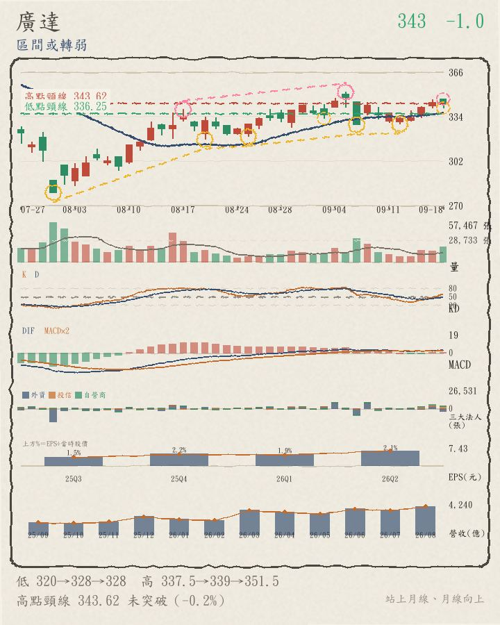
今天帶量收黑、站上月線 336.625，離高點頸線 343.62 還差 0.2%，轉折還沒走出明顯方向。
- 月線位置：收盤 343 在月線 336.625 之上；5 日線 338.6 也在月線之上（短均在上）；月線向上、5 日線向上
- 量能：成交量是 20 日均量的 1.59 倍，比 20 日均量大不少；收黑卻量增，量價背離
- 關鍵價位：高點頸線 343.62 還沒突破，差 0.2%；最近轉折高點 351.5（低於 2.4%）；最近轉折低點 328.5（高於 4.4%）
- 轉折結構：低點 319.5、328、328.5 與高點 337.5、339、351.5 都沒有明顯遞增，屬於區間震盪或轉弱；還沒確認的轉折低點 09-03 332.5、09-18 340；還沒確認的轉折高點 09-18 346.5（圖上虛線小圈）
上升趨勢（底底高＋頭頭高） 成交金額 68.64 億・全榜第 47 名（上市第 37 名）
好條件 3/8：月線向上、底底高、頭頭高
不好條件 4/8：跌破前低、相對大盤弱、在月線之下、外資賣超
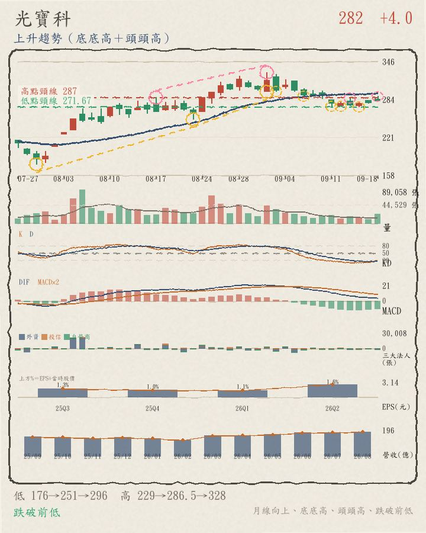
今天收紅、但成交量比平均少、跌破月線 293.75，跌破前一個轉折低點（高點頸線 287 還在收盤上方），轉折結構仍是底底高＋頭頭高。
- 月線位置：收盤 282 在月線 293.75 之下；5 日線 277.7 也在月線之下（短均在下）；月線向上、5 日線走平或向下
- 量能：成交量是 20 日均量的 0.84 倍，比 20 日均量少很多；收紅但量縮，量價背離
- 關鍵價位：高點頸線 287 還沒突破、還在收盤上方 1.7%；最近轉折高點 328（低於 14.0%）；最近轉折低點 296.5（低於 4.9%）
- 轉折結構：低點 176.5、251、296.5 一路墊高 68.0%、高點 229、286.5、328 也一路墊高 43.2%，是底底高＋頭頭高；還沒確認的轉折低點 09-14 272、09-16 271；還沒確認的轉折高點 09-15 286、09-18 288.5（圖上虛線小圈）
底部墊高、未過前高 成交金額 67.28 億・全榜第 48 名（上市第 38 名）
好條件 5/8：月線向上、底底高、突破頸線、相對大盤強、外資買超
不好條件 1/8：在月線之下
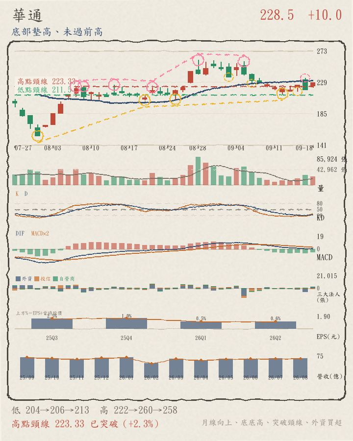
今天收紅、但成交量比平均少、跌破月線 231.475，已站上高點頸線 223.33，底部還在墊高（但高點沒同步創高）。
- 月線位置：收盤 228.5 在月線 231.475 之下；5 日線 222.3 也在月線之下（短均在下）；月線向上、5 日線走平或向下
- 量能：成交量是 20 日均量的 0.77 倍，比 20 日均量少很多；收紅但量縮，量價背離
- 關鍵價位：高點頸線 223.33 已站上；最近轉折高點 258（低於 11.4%）；最近轉折低點 213（高於 7.3%）
- 轉折結構：低點 204、205.5、213 墊高 4.4%（底底高），但高點 222、260、258 沒有同步創高；還沒確認的轉折低點 09-08 227.5、09-16 216；還沒確認的轉折高點 09-17 235（圖上虛線小圈）
高點墊高、底部不穩 成交金額 67.11 億・全榜第 49 名（上市第 39 名）
好條件 6/8：站上月線、月線向上、頭頭高、突破頸線、相對大盤強、外資買超
不好條件 0/8：無
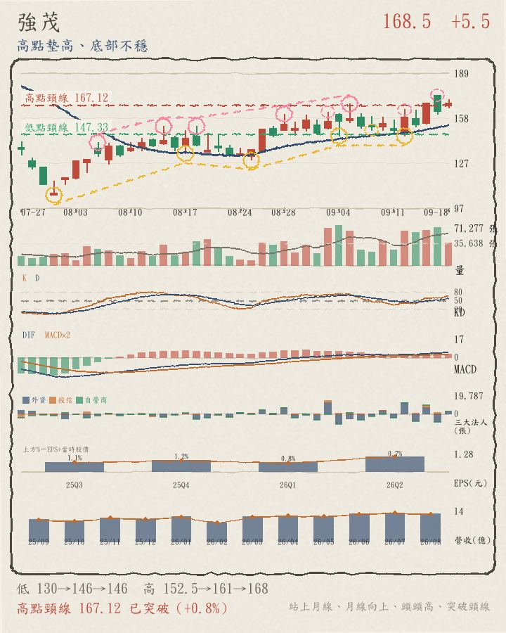
今天收紅、站上月線 153.475，已站上高點頸線 167.12，高點還在墊高（但底部沒同步墊高）。
- 月線位置：收盤 168.5 在月線 153.475 之上；5 日線 162.5 也在月線之上（短均在上）；月線向上、5 日線向上
- 量能：成交量是 20 日均量的 1.00 倍，跟 20 日均量差不多
- 關鍵價位：高點頸線 167.12 已站上；最近轉折高點 168（高於 0.3%）；最近轉折低點 146（高於 15.4%）
- 轉折結構：高點 152.5、161、168 墊高 10.2%（頭頭高），但低點 129.5、146、146 沒有同步墊高；還沒確認的轉折低點 09-09 150；還沒確認的轉折高點 09-14 164、09-17 174（圖上虛線小圈）
區間或轉弱 成交金額 62.34 億・全榜第 50 名（上市第 40 名）
好條件 2/8：站上月線、月線向上
不好條件 4/8：今日下跌、相對大盤弱、外資賣超、收盤跌破前一日低點
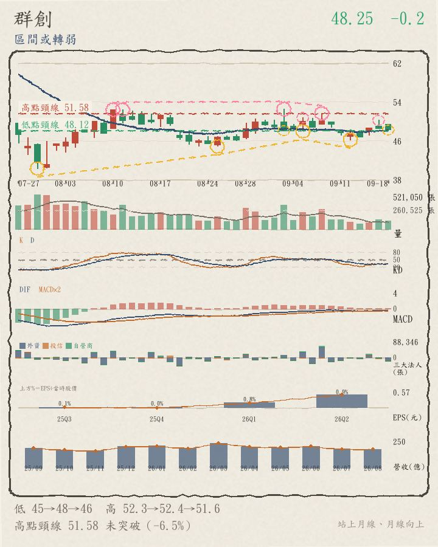
今天收黑、成交量也比平均少、站上月線 48.205，離高點頸線 51.58 還差 6.5%，轉折還沒走出明顯方向。
- 月線位置：收盤 48.25 在月線 48.205 之上；5 日線 47.98 也在月線之下（短均在下）；月線向上、5 日線走平或向下
- 量能：成交量是 20 日均量的 0.72 倍，比 20 日均量少很多
- 關鍵價位：高點頸線 51.58 還沒突破，差 6.5%；最近轉折高點 51.6（低於 6.5%）；最近轉折低點 46.25（高於 4.3%）
- 轉折結構：低點 44.95、48、46.25 與高點 52.3、52.4、51.6 都沒有明顯遞增，屬於區間震盪或轉弱；還沒確認的轉折低點 09-03 48.1、09-18 48.25；還沒確認的轉折高點 09-07 50.7、09-17 50.2（圖上虛線小圈）
上升趨勢（底底高＋頭頭高） 成交金額 61.85 億・全榜第 51 名（上市第 41 名）
好條件 5/8：底底高、頭頭高、突破頸線、相對大盤強、量價攻擊（收紅＋大量）
不好條件 3/8：在月線之下、外資賣超、月線下彎
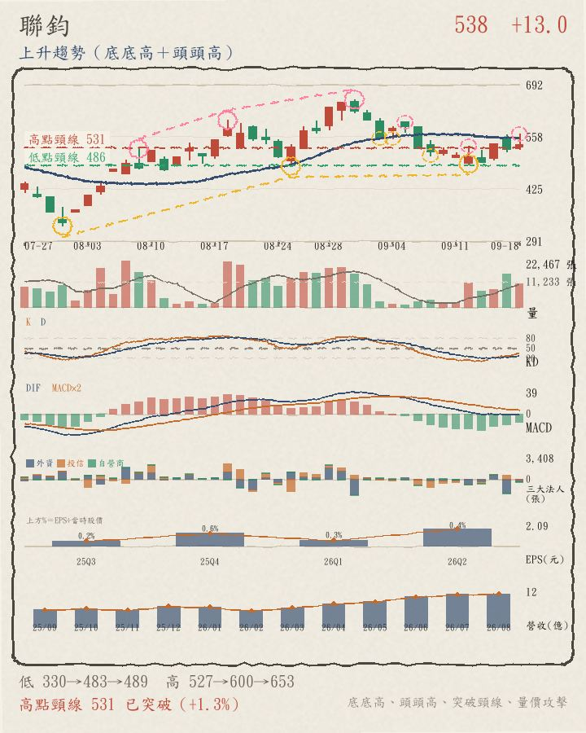
今天帶量收紅、跌破月線 555.325，已站上高點頸線 531，轉折結構仍是底底高＋頭頭高。
- 月線位置：收盤 538 在月線 555.325 之下；5 日線 521.1 也在月線之下（短均在下）；月線走平或向下、5 日線走平或向下
- 量能：成交量是 20 日均量的 1.15 倍，比 20 日均量大不少；收紅又量增，量價配合
- 關鍵價位：高點頸線 531 已站上；最近轉折高點 653（低於 17.6%）；最近轉折低點 489（高於 10.0%）
- 轉折結構：低點 330、483、489 一路墊高 48.2%、高點 527、600、653 也一路墊高 23.9%，是底底高＋頭頭高；還沒確認的轉折低點 09-04 554、09-09 510；還沒確認的轉折高點 09-14 535、09-18 565（圖上虛線小圈）
上升趨勢（底底高＋頭頭高） 成交金額 61.05 億・全榜第 52 名（上市第 42 名）
好條件 6/8：站上月線、月線向上、底底高、頭頭高、突破頸線、量價攻擊（收紅＋大量）
不好條件 2/8：相對大盤弱、外資賣超
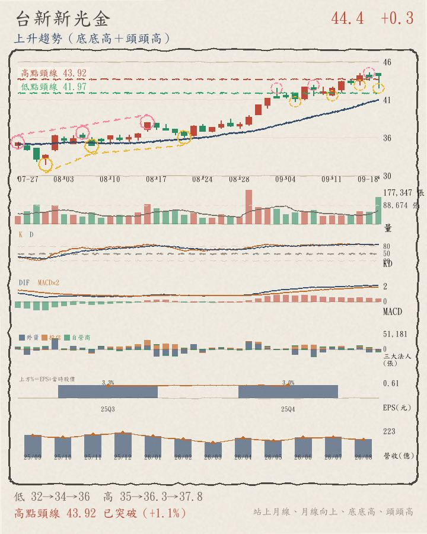
今天帶量收紅、站上月線 40.993，已站上高點頸線 43.92，轉折結構仍是底底高＋頭頭高。
- 月線位置：收盤 44.4 在月線 40.993 之上；5 日線 43.96 也在月線之上（短均在上）；月線向上、5 日線向上
- 量能：成交量是 20 日均量的 2.32 倍，比 20 日均量大不少；收紅又量增，量價配合
- 關鍵價位：高點頸線 43.92 已站上；最近轉折高點 37.8（高於 17.5%）；最近轉折低點 35.7（高於 24.4%）
- 轉折結構：低點 31.85、34.5、35.7 一路墊高 12.1%、高點 35、36.3、37.8 也一路墊高 8.0%，是底底高＋頭頭高；還沒確認的轉折低點 09-16 43.05、09-18 42.6；還沒確認的轉折高點 09-09 43.05、09-17 44.8（圖上虛線小圈）
區間或轉弱 成交金額 60.7 億・全榜第 53 名（上市第 43 名）
好條件 0/8：無
不好條件 4/8：相對大盤弱、在月線之下、外資賣超、月線下彎
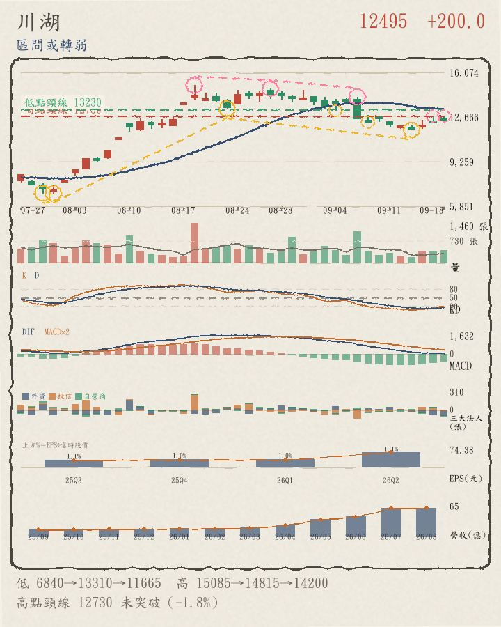
今天收紅、跌破月線 13269.8，離高點頸線 12730 還差 1.8%，轉折還沒走出明顯方向。
- 月線位置：收盤 12495 在月線 13269.8 之下；5 日線 12108 也在月線之下（短均在下）；月線走平或向下、5 日線走平或向下
- 量能：成交量是 20 日均量的 0.97 倍，跟 20 日均量差不多
- 關鍵價位：高點頸線 12730 還沒突破，差 1.8%；最近轉折高點 14200（低於 12.0%）；最近轉折低點 11665（高於 7.1%）
- 轉折結構：低點 6840、13310、11665 與高點 15085、14815、14200 都沒有明顯遞增，屬於區間震盪或轉弱；還沒確認的轉折低點 09-04 13150、09-09 12285；還沒確認的轉折高點 09-17 12730、09-18 12730（圖上虛線小圈）
上升趨勢（底底高＋頭頭高） 成交金額 60.13 億・全榜第 54 名（上市第 44 名）
好條件 6/8：站上月線、底底高、頭頭高、突破頸線、相對大盤強、量價攻擊（收紅＋大量）
不好條件 2/8：外資賣超、月線下彎
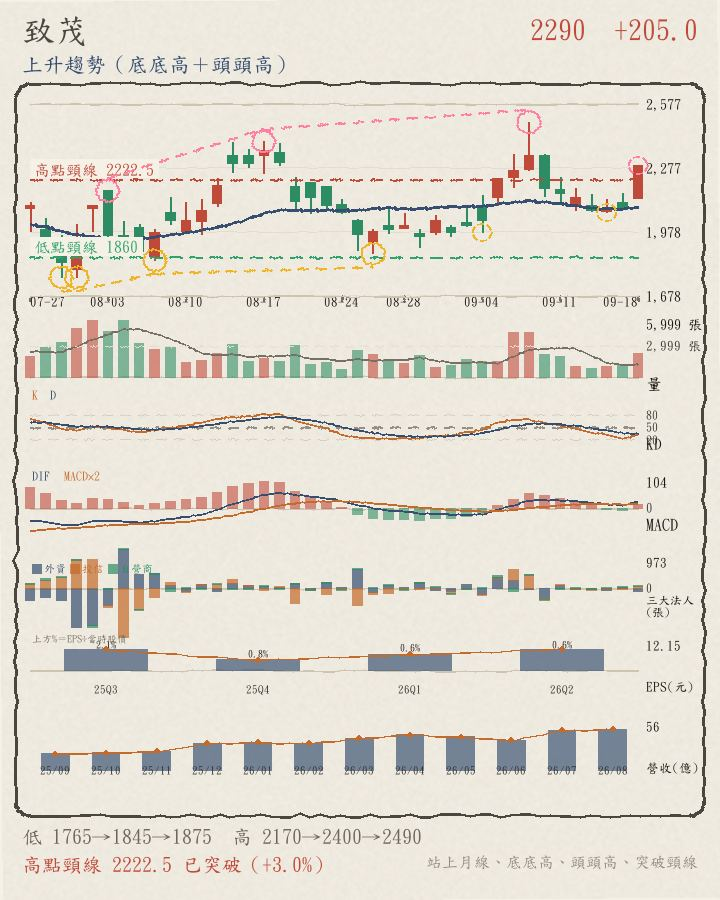
今天帶量收紅、站上月線 2094，已站上高點頸線 2222.5，轉折結構仍是底底高＋頭頭高。
- 月線位置：收盤 2290 在月線 2094 之上；5 日線 2137 也在月線之上（短均在上）；月線走平或向下、5 日線走平或向下
- 量能：成交量是 20 日均量的 1.28 倍，比 20 日均量大不少；收紅又量增，量價配合
- 關鍵價位：高點頸線 2222.5 已站上；最近轉折高點 2490（低於 8.0%）；最近轉折低點 1875（高於 22.1%）
- 轉折結構：低點 1765、1845、1875 一路墊高 6.2%、高點 2170、2400、2490 也一路墊高 14.7%，是底底高＋頭頭高；還沒確認的轉折低點 09-04 1975、09-16 2070；還沒確認的轉折高點 09-18 2290（圖上虛線小圈）
底部墊高、未過前高 成交金額 58.77 億・全榜第 55 名（上市第 45 名）
好條件 7/8：站上月線、月線向上、底底高、突破頸線、相對大盤強、外資買超、量價攻擊（收紅＋大量）
不好條件 0/8：無
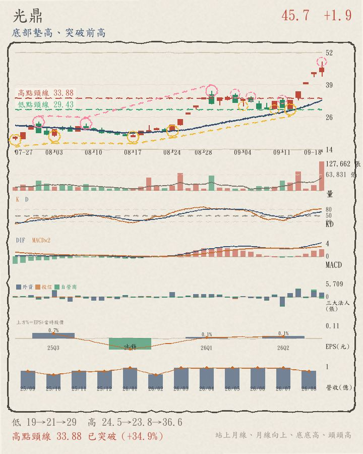
今天帶量收紅、站上月線 33.013，已站上高點頸線 34.43，底部還在墊高（但高點沒同步創高）。
- 月線位置：收盤 45.7 在月線 33.013 之上；5 日線 39.75 也在月線之上（短均在上）；月線向上、5 日線向上
- 量能：成交量是 20 日均量的 5.40 倍，比 20 日均量大不少；收紅又量增，量價配合
- 關鍵價位：高點頸線 34.43 已站上；最近轉折高點 36.6（高於 24.9%）；最近轉折低點 29.4（高於 55.4%）
- 轉折結構：低點 18.7、21、29.4 墊高 57.2%（底底高），但高點 24.5、23.8、36.6 沒有同步創高；還沒確認的轉折低點 09-04 30.7、09-10 29.45；還沒確認的轉折高點 09-11 33.35、09-18 48（圖上虛線小圈）
上升趨勢（底底高＋頭頭高） 成交金額 58.69 億・全榜第 56 名（上市第 46 名）
好條件 6/8：站上月線、月線向上、底底高、頭頭高、相對大盤強、量價攻擊（收紅＋大量）
不好條件 1/8：外資賣超
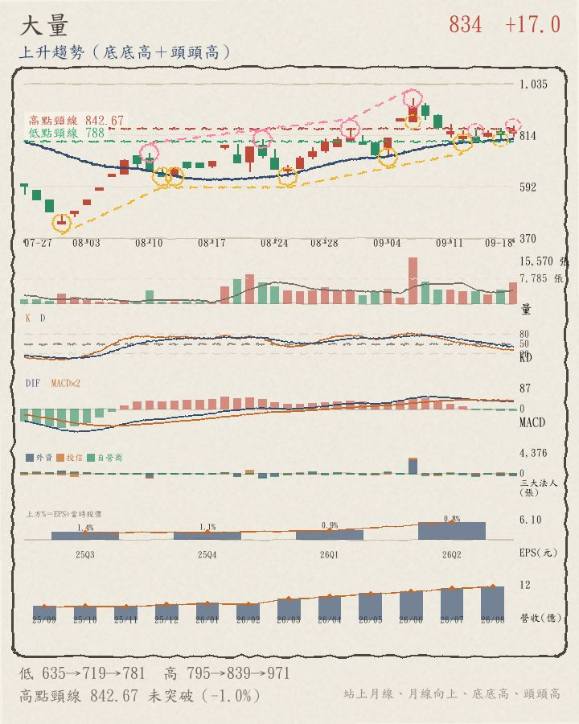
今天帶量收紅、站上月線 797.75，離高點頸線 842.67 還差 1.0%，轉折結構仍是底底高＋頭頭高。
- 月線位置：收盤 834 在月線 797.75 之上；5 日線 815.4 也在月線之上（短均在上）；月線向上、5 日線走平或向下
- 量能：成交量是 20 日均量的 1.41 倍，比 20 日均量大不少；收紅又量增，量價配合
- 關鍵價位：高點頸線 842.67 還沒突破，差 1.0%；最近轉折高點 971（低於 14.1%）；最近轉折低點 781（高於 6.8%）
- 轉折結構：低點 635、719、781 一路墊高 23.0%、高點 795、839、971 也一路墊高 22.1%，是底底高＋頭頭高；還沒確認的轉折低點 09-08 871、09-17 795；還沒確認的轉折高點 09-15 834、09-18 855（圖上虛線小圈）
底部墊高、未過前高 成交金額 58.24 億・全榜第 58 名（上市第 47 名）
好條件 4/8：月線向上、底底高、相對大盤強、外資買超
不好條件 1/8：在月線之下
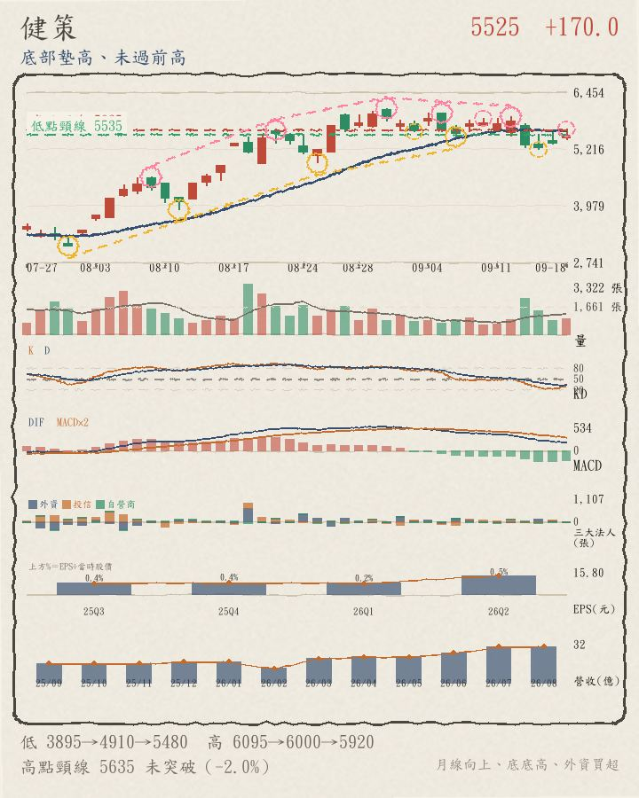
今天收紅、但成交量比平均少、跌破月線 5621，離高點頸線 5910 還差 6.5%，底部還在墊高（但高點沒同步創高）。
- 月線位置：收盤 5525 在月線 5621 之下；5 日線 5450 也在月線之下（短均在下）；月線向上、5 日線走平或向下
- 量能：成交量是 20 日均量的 0.84 倍，比 20 日均量少很多；收紅但量縮，量價背離
- 關鍵價位：高點頸線 5910 還沒突破，差 6.5%；最近轉折高點 5920（低於 6.7%）；最近轉折低點 5480（高於 0.8%）
- 轉折結構：低點 3895、4910、5480 墊高 40.7%（底底高），但高點 6095、6000、5920 沒有同步創高；還沒確認的轉折低點 09-03 5590、09-16 5210；還沒確認的轉折高點 09-10 5885、09-18 5650（圖上虛線小圈）
區間或轉弱 成交金額 57.97 億・全榜第 59 名（上市第 48 名）
好條件 5/8：站上月線、月線向上、相對大盤強、外資買超、量價攻擊（收紅＋大量）
不好條件 0/8：無
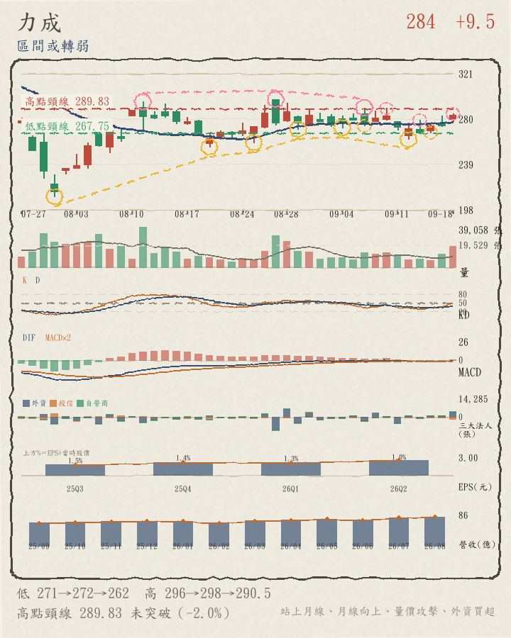
今天帶量收紅、站上月線 277.45，離高點頸線 289.83 還差 2.0%，轉折還沒走出明顯方向。
- 月線位置：收盤 284 在月線 277.45 之上；5 日線 274.5 也在月線之下（短均在下）；月線向上、5 日線走平或向下
- 量能：成交量是 20 日均量的 1.65 倍，比 20 日均量大不少；收紅又量增，量價配合
- 關鍵價位：高點頸線 289.83 還沒突破，差 2.0%；最近轉折高點 290.5（低於 2.2%）；最近轉折低點 262（高於 8.4%）
- 轉折結構：低點 271、272.5、262 與高點 296、298、290.5 都沒有明顯遞增，屬於區間震盪或轉弱；還沒確認的轉折低點 09-08 274、09-16 268；還沒確認的轉折高點 09-15 279.5、09-18 285（圖上虛線小圈）
底部墊高、未過前高 成交金額 57.89 億・全榜第 60 名（上市第 49 名）
好條件 7/8：站上月線、月線向上、底底高、突破頸線、相對大盤強、外資買超、量價攻擊（收紅＋大量）
不好條件 0/8：無
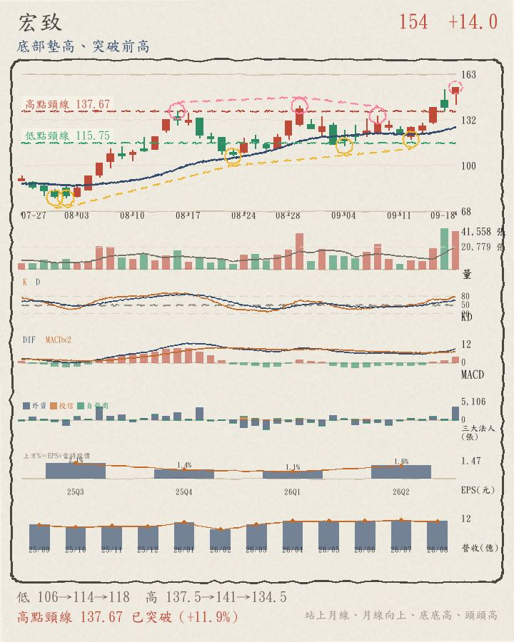
今天帶量收紅、站上月線 126.55，已站上高點頸線 137.67，底部還在墊高（但高點沒同步創高）。
- 月線位置：收盤 154 在月線 126.55 之上；5 日線 137.6 也在月線之上（短均在上）；月線向上、5 日線向上
- 量能：成交量是 20 日均量的 2.46 倍，比 20 日均量大不少；收紅又量增，量價配合
- 關鍵價位：高點頸線 137.67 已站上；最近轉折高點 134.5（高於 14.5%）；最近轉折低點 118（高於 30.5%）
- 轉折結構：低點 106.5、113.5、118 墊高 10.8%（底底高），但高點 137.5、141、134.5 沒有同步創高；還沒確認的轉折高點 09-18 154（圖上虛線小圈）
上升趨勢（底底高＋頭頭高） 成交金額 52.79 億・全榜第 64 名（上市第 50 名）
好條件 5/8：站上月線、月線向上、底底高、頭頭高、外資買超
不好條件 4/8：今日下跌、相對大盤弱、量增下跌（出貨）、收盤跌破前一日低點
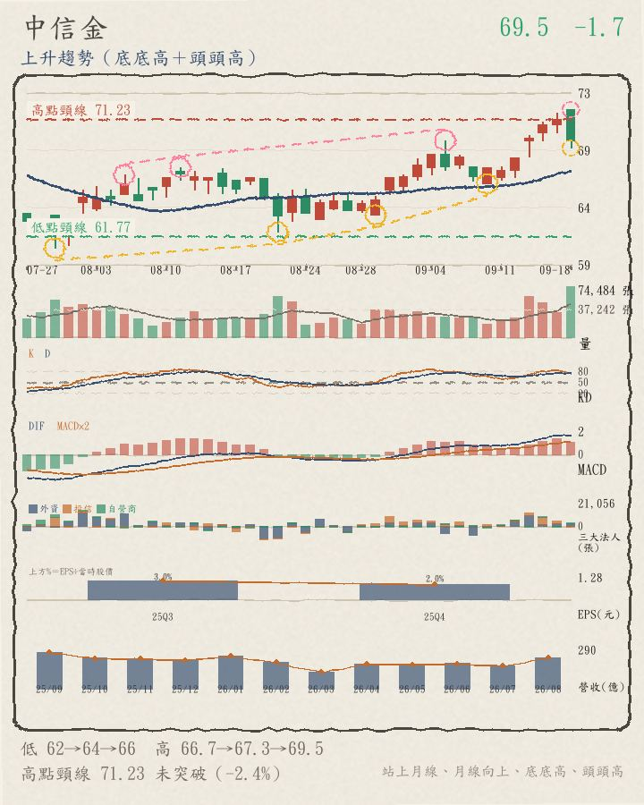
今天帶量收黑、站上月線 67.025，離高點頸線 70.25 還差 1.1%，轉折結構仍是底底高＋頭頭高。
- 月線位置：收盤 69.5 在月線 67.025 之上；5 日線 69.86 也在月線之上（短均在上）；月線向上、5 日線向上
- 量能：成交量是 20 日均量的 2.33 倍，比 20 日均量大不少；收黑卻量增，量價背離
- 關鍵價位：高點頸線 70.25 還沒突破，差 1.1%；最近轉折高點 69.5（高於 0.0%）；最近轉折低點 66（高於 5.3%）
- 轉折結構：低點 62.1、63.5、66 一路墊高 6.3%、高點 66.7、67.3、69.5 也一路墊高 4.2%，是底底高＋頭頭高；還沒確認的轉折低點 09-18 68.9；還沒確認的轉折高點 09-18 72（圖上虛線小圈）
區間或轉弱 成交金額 210.83 億・全榜第 8 名（上櫃第 1 名）
好條件 6/8：站上月線、月線向上、突破頸線、相對大盤強、外資買超、量價攻擊（收紅＋大量）
不好條件 0/8：無

今天帶量收紅、站上月線 446.25，已站上高點頸線 489，轉折還沒走出明顯方向。
- 月線位置：收盤 500 在月線 446.25 之上；5 日線 468.3 也在月線之上（短均在上）；月線向上、5 日線向上
- 量能：成交量是 20 日均量的 1.47 倍，比 20 日均量大不少；收紅又量增，量價配合
- 關鍵價位：高點頸線 489 已站上；最近轉折高點 478（高於 4.6%）；最近轉折低點 420（高於 19.0%）
- 轉折結構：低點 349.5、438.5、420 與高點 492、492、478 都沒有明顯遞增，屬於區間震盪或轉弱；還沒確認的轉折低點 09-08 440、09-18 467；還沒確認的轉折高點 09-15 476、09-17 507（圖上虛線小圈）
區間或轉弱 成交金額 162.32 億・全榜第 16 名（上櫃第 2 名）
好條件 6/8：站上月線、月線向上、突破頸線、相對大盤強、外資買超、量價攻擊（收紅＋大量）
不好條件 0/8：無

今天帶量收紅、站上月線 188.825，已站上高點頸線 202.83，轉折還沒走出明顯方向。
- 月線位置：收盤 229 在月線 188.825 之上；5 日線 207 也在月線之上（短均在上）；月線向上、5 日線向上
- 量能：成交量是 20 日均量的 1.72 倍，比 20 日均量大不少；收紅又量增，量價配合
- 關鍵價位：高點頸線 202.83 已站上；最近轉折高點 203（高於 12.8%）；最近轉折低點 171（高於 33.9%）
- 轉折結構：低點 155.5、152、171 與高點 171、203、203 都沒有明顯遞增，屬於區間震盪或轉弱；還沒確認的轉折低點 09-03 174；還沒確認的轉折高點 09-04 202.5、09-18 229（圖上虛線小圈）
區間或轉弱 成交金額 143.05 億・全榜第 21 名（上櫃第 3 名）
好條件 3/8：相對大盤強、外資買超、量價攻擊（收紅＋大量）
不好條件 2/8：在月線之下、月線下彎

今天帶量收紅、跌破月線 947.85，離高點頸線 1010.5 還差 6.6%，轉折還沒走出明顯方向。
- 月線位置：收盤 944 在月線 947.85 之下；5 日線 921.4 也在月線之下（短均在下）；月線走平或向下、5 日線走平或向下
- 量能：成交量是 20 日均量的 1.95 倍，比 20 日均量大不少；收紅又量增，量價配合
- 關鍵價位：高點頸線 1010.5 還沒突破，差 6.6%；最近轉折高點 1015（低於 7.0%）；最近轉折低點 872（高於 8.3%）
- 轉折結構：低點 931、875、872 與高點 1035、1015、1015 都沒有明顯遞增，屬於區間震盪或轉弱；還沒確認的轉折低點 09-08 944、09-18 901；還沒確認的轉折高點 09-15 959、09-17 977（圖上虛線小圈）
區間或轉弱 成交金額 128 億・全榜第 26 名（上櫃第 4 名）
好條件 4/8：站上月線、相對大盤強、外資買超、量價攻擊（收紅＋大量）
不好條件 1/8：月線下彎

今天帶量收紅、站上月線 2064.5，離高點頸線 2166 還差 1.2%，轉折還沒走出明顯方向。
- 月線位置：收盤 2140 在月線 2064.5 之上；5 日線 1990 也在月線之下（短均在下）；月線走平或向下、5 日線走平或向下
- 量能：成交量是 20 日均量的 1.77 倍，比 20 日均量大不少；收紅又量增，量價配合
- 關鍵價位：高點頸線 2166 還沒突破，差 1.2%；最近轉折高點 2160（低於 0.9%）；最近轉折低點 1900（高於 12.6%）
- 轉折結構：低點 1905、1970、1900 與高點 2215、2195、2160 都沒有明顯遞增，屬於區間震盪或轉弱；還沒確認的轉折高點 09-03 2120、09-18 2140（圖上虛線小圈）
區間或轉弱 成交金額 126.46 億・全榜第 27 名（上櫃第 5 名）
好條件 3/8：相對大盤強、外資買超、量價攻擊（收紅＋大量）
不好條件 2/8：在月線之下、月線下彎

今天帶量收紅、跌破月線 1405.75，離高點頸線 1441.25 還差 4.9%，轉折還沒走出明顯方向。
- 月線位置：收盤 1370 在月線 1405.75 之下；5 日線 1377 也在月線之下（短均在下）；月線走平或向下、5 日線向上
- 量能：成交量是 20 日均量的 1.50 倍，比 20 日均量大不少；收紅又量增，量價配合
- 關鍵價位：高點頸線 1441.25 還沒突破，差 4.9%；最近轉折高點 1430（低於 4.2%）；最近轉折低點 1295（高於 5.8%）
- 轉折結構：低點 1455、1395、1295 與高點 1730、1565、1430 都沒有明顯遞增，屬於區間震盪或轉弱；還沒確認的轉折低點 09-14 1320、09-17 1275；還沒確認的轉折高點 09-16 1460、09-17 1460（圖上虛線小圈）
區間或轉弱 成交金額 119.66 億・全榜第 28 名（上櫃第 6 名）
好條件 5/8：站上月線、月線向上、相對大盤強、外資買超、量價攻擊（收紅＋大量）
不好條件 0/8：無

今天帶量收紅、站上月線 1300.25，離高點頸線 1510 還差 2.0%，轉折還沒走出明顯方向。
- 月線位置：收盤 1480 在月線 1300.25 之上；5 日線 1358 也在月線之上（短均在上）；月線向上、5 日線走平或向下
- 量能：成交量是 20 日均量的 2.18 倍，比 20 日均量大不少；收紅又量增，量價配合
- 關鍵價位：高點頸線 1510 還沒突破，差 2.0%；最近轉折高點 1505（低於 1.7%）；最近轉折低點 1240（高於 19.4%）
- 轉折結構：低點 955、1300、1240 與高點 1080、1080、1505 都沒有明顯遞增，屬於區間震盪或轉弱；還沒確認的轉折低點 09-03 1320；還沒確認的轉折高點 09-10 1440、09-18 1515（圖上虛線小圈）
區間或轉弱 成交金額 116.02 億・全榜第 29 名（上櫃第 7 名）
好條件 5/8：站上月線、月線向上、相對大盤強、外資買超、量價攻擊（收紅＋大量）
不好條件 0/8：無

今天帶量收紅、站上月線 118.033，離高點頸線 132.29 還差 9.7%，轉折還沒走出明顯方向。
- 月線位置：收盤 119.5 在月線 118.033 之上；5 日線 116.9 也在月線之下（短均在下）；月線向上、5 日線走平或向下
- 量能：成交量是 20 日均量的 1.23 倍，比 20 日均量大不少；收紅又量增，量價配合
- 關鍵價位：高點頸線 132.29 還沒突破，差 9.7%；最近轉折高點 135（低於 11.5%）；最近轉折低點 108.571（高於 10.1%）
- 轉折結構：低點 70.857、56.2856、108.571 與高點 95.1427、89.4284、135 都沒有明顯遞增，屬於區間震盪或轉弱；還沒確認的轉折低點 09-15 114.5、09-17 111；還沒確認的轉折高點 09-16 121.5、09-18 123（圖上虛線小圈）
上升趨勢（底底高＋頭頭高） 成交金額 89.82 億・全榜第 38 名（上櫃第 8 名）
好條件 3/8：底底高、頭頭高、相對大盤強
不好條件 3/8：在月線之下、外資賣超、月線下彎

今天收紅、但成交量比平均少、跌破月線 3027.25，離高點頸線 2896.67 還差 0.6%，轉折結構仍是底底高＋頭頭高。
- 月線位置：收盤 2880 在月線 3027.25 之下；5 日線 2765 也在月線之下（短均在下）；月線走平或向下、5 日線走平或向下
- 量能：成交量是 20 日均量的 0.84 倍，比 20 日均量少很多；收紅但量縮，量價背離
- 關鍵價位：高點頸線 2896.67 還沒突破，差 0.6%；最近轉折高點 3600（低於 20.0%）；最近轉折低點 2650（高於 8.7%）
- 轉折結構：低點 1335、1450、2650 一路墊高 98.5%、高點 2010、3065、3600 也一路墊高 79.1%，是底底高＋頭頭高；還沒確認的轉折低點 09-04 2980；還沒確認的轉折高點 09-16 2930、09-17 2930（圖上虛線小圈）
上升趨勢（底底高＋頭頭高） 成交金額 75.21 億・全榜第 44 名（上櫃第 9 名）
好條件 7/8：站上月線、月線向上、底底高、頭頭高、突破頸線、相對大盤強、量價攻擊（收紅＋大量）
不好條件 1/8：外資賣超

今天帶量收紅、站上月線 229.125，已站上高點頸線 242.75，轉折結構仍是底底高＋頭頭高。
- 月線位置：收盤 268.5 在月線 229.125 之上；5 日線 236.9 也在月線之上（短均在上）；月線向上、5 日線向上
- 量能：成交量是 20 日均量的 4.14 倍，比 20 日均量大不少；收紅又量增，量價配合
- 關鍵價位：高點頸線 242.75 已站上；最近轉折高點 251.5（高於 6.8%）；最近轉折低點 222.5（高於 20.7%）
- 轉折結構：低點 159、202、222.5 一路墊高 39.9%、高點 238、239.5、251.5 也一路墊高 5.7%，是底底高＋頭頭高；還沒確認的轉折低點 09-04 224.5、09-16 220；還沒確認的轉折高點 09-08 242、09-18 268.5（圖上虛線小圈）
區間或轉弱 成交金額 73.71 億・全榜第 46 名（上櫃第 10 名）
好條件 4/8：站上月線、相對大盤強、外資買超、量價攻擊（收紅＋大量）
不好條件 1/8：月線下彎

今天帶量收紅、站上月線 109.15，離高點頸線 118 還差 1.7%，轉折還沒走出明顯方向。
- 月線位置：收盤 116 在月線 109.15 之上；5 日線 109.5 也在月線之上（短均在上）；月線走平或向下、5 日線向上
- 量能：成交量是 20 日均量的 1.41 倍，比 20 日均量大不少；收紅又量增，量價配合
- 關鍵價位：高點頸線 118 還沒突破，差 1.7%；最近轉折高點 119（低於 2.5%）；最近轉折低點 100（高於 16.0%）
- 轉折結構：低點 103.5、104、100 與高點 131、117.5、119 都沒有明顯遞增，屬於區間震盪或轉弱；還沒確認的轉折低點 09-03 104.5、09-08 109；還沒確認的轉折高點 09-17 117.5（圖上虛線小圈）
高點墊高、底部不穩 成交金額 58.56 億・全榜第 57 名（上櫃第 11 名）
好條件 6/8：站上月線、月線向上、頭頭高、突破頸線、相對大盤強、量價攻擊（收紅＋大量）
不好條件 1/8：外資賣超

今天帶量收紅、站上月線 414.375，已站上高點頸線 340，高點還在墊高（但底部沒同步墊高）。
- 月線位置：收盤 444.5 在月線 414.375 之上；5 日線 427.1 也在月線之上（短均在上）；月線向上、5 日線走平或向下
- 量能：成交量是 20 日均量的 1.07 倍，比 20 日均量大一些；收紅又量增，量價配合
- 關鍵價位：高點頸線 340 已站上；最近轉折高點 496（低於 10.4%）；最近轉折低點 407（高於 9.2%）
- 轉折結構：高點 328.5、431、496 墊高 51.0%（頭頭高），但低點 288、289、407 沒有同步墊高；還沒確認的轉折低點 09-03 393、09-18 418.5；還沒確認的轉折高點 09-17 445（圖上虛線小圈）
區間或轉弱 成交金額 57.16 億・全榜第 61 名（上櫃第 12 名）
好條件 5/8：站上月線、月線向上、相對大盤強、外資買超、量價攻擊（收紅＋大量）
不好條件 0/8：無

今天收紅、站上月線 584.2，離高點頸線 634.67 還差 3.7%，轉折還沒走出明顯方向。
- 月線位置：收盤 611 在月線 584.2 之上；5 日線 554 也在月線之下（短均在下）；月線向上、5 日線走平或向下
- 量能：成交量是 20 日均量的 1.04 倍，跟 20 日均量差不多
- 關鍵價位：高點頸線 634.67 還沒突破，差 3.7%；最近轉折高點 658（低於 7.1%）；最近轉折低點 501（高於 22.0%）
- 轉折結構：低點 495、572、501 與高點 654、635、658 都沒有明顯遞增，屬於區間震盪或轉弱；還沒確認的轉折低點 09-07 590、09-08 590；還沒確認的轉折高點 09-07 635、09-18 611（圖上虛線小圈）
上升趨勢（底底高＋頭頭高） 成交金額 56.13 億・全榜第 62 名（上櫃第 13 名）
好條件 6/8：站上月線、月線向上、底底高、頭頭高、相對大盤強、外資買超
不好條件 0/8：無

今天收紅、但成交量比平均少、站上月線 263.225，離高點頸線 323 還差 2.8%，轉折結構仍是底底高＋頭頭高。
- 月線位置：收盤 314 在月線 263.225 之上；5 日線 304.1 也在月線之上（短均在上）；月線向上、5 日線向上
- 量能：成交量是 20 日均量的 0.94 倍，比 20 日均量少一些；收紅但量縮，量價背離
- 關鍵價位：高點頸線 323 還沒突破，差 2.8%；最近轉折高點 270.5（高於 16.1%）；最近轉折低點 265.5（高於 18.3%）
- 轉折結構：低點 189.5、190.5、265.5 一路墊高 40.1%、高點 178、230、270.5 也一路墊高 52.0%，是底底高＋頭頭高；還沒確認的轉折低點 09-14 272.5、09-17 295；還沒確認的轉折高點 09-11 321、09-17 325（圖上虛線小圈）
高點墊高、底部不穩 成交金額 54.59 億・全榜第 63 名（上櫃第 14 名）
好條件 7/8：站上月線、月線向上、頭頭高、突破頸線、相對大盤強、外資買超、量價攻擊（收紅＋大量）
不好條件 0/8：無

今天帶量收紅、站上月線 155.05，已站上高點頸線 158.9，高點還在墊高（但底部沒同步墊高）。
- 月線位置：收盤 172 在月線 155.05 之上；5 日線 161.6 也在月線之上（短均在上）；月線向上、5 日線向上
- 量能：成交量是 20 日均量的 2.74 倍，比 20 日均量大不少；收紅又量增，量價配合
- 關鍵價位：高點頸線 158.9 已站上；最近轉折高點 163（高於 5.5%）；最近轉折低點 152.5（高於 12.8%）
- 轉折結構：高點 157、158、163 墊高 3.8%（頭頭高），但低點 146.5、147、152.5 沒有同步墊高；還沒確認的轉折低點 09-16 153；還沒確認的轉折高點 09-14 160、09-18 174（圖上虛線小圈）
高點墊高、底部不穩 成交金額 46.85 億・全榜第 65 名（上櫃第 15 名）
好條件 7/8：站上月線、月線向上、頭頭高、突破頸線、相對大盤強、外資買超、量價攻擊（收紅＋大量）
不好條件 0/8：無

今天帶量收紅、站上月線 1346.75，已站上高點頸線 1483.75，高點還在墊高（但底部沒同步墊高）。
- 月線位置：收盤 1670 在月線 1346.75 之上；5 日線 1525 也在月線之上（短均在上）；月線向上、5 日線向上
- 量能：成交量是 20 日均量的 2.83 倍，比 20 日均量大不少；收紅又量增，量價配合
- 關鍵價位：高點頸線 1483.75 已站上；最近轉折高點 1505（高於 11.0%）；最近轉折低點 1235（高於 35.2%）
- 轉折結構：高點 1250、1460、1505 墊高 20.4%（頭頭高），但低點 1050、1050、1235 沒有同步墊高；還沒確認的轉折低點 09-04 1335；還沒確認的轉折高點 09-07 1495、09-17 1695（圖上虛線小圈）
高點墊高、底部不穩 成交金額 43.44 億・全榜第 66 名（上櫃第 16 名）
好條件 5/8：站上月線、月線向上、頭頭高、突破頸線、相對大盤強
不好條件 1/8：外資賣超
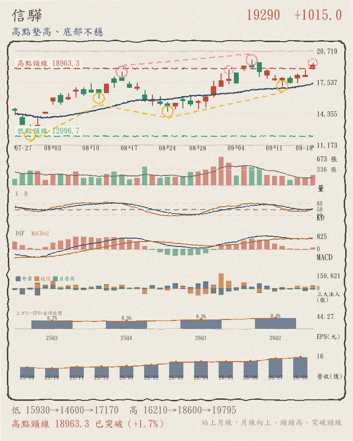
今天收紅、但成交量比平均少、站上月線 17415.5，已站上高點頸線 18963.3，高點還在墊高（但底部沒同步墊高）。
- 月線位置：收盤 19290 在月線 17415.5 之上；5 日線 18263 也在月線之上（短均在上）；月線向上、5 日線走平或向下
- 量能：成交量是 20 日均量的 0.77 倍，比 20 日均量少很多；收紅但量縮，量價背離
- 關鍵價位：高點頸線 18963.3 已站上；最近轉折高點 19795（低於 2.6%）；最近轉折低點 17170（高於 12.3%）
- 轉折結構：高點 16210、18600、19795 墊高 22.1%（頭頭高），但低點 15930、14600、17170 沒有同步墊高；還沒確認的轉折高點 09-03 18790、09-18 19500（圖上虛線小圈）
區間或轉弱 成交金額 42.72 億・全榜第 67 名（上櫃第 17 名）
好條件 5/8：站上月線、月線向上、突破頸線、相對大盤強、外資買超
不好條件 0/8：無
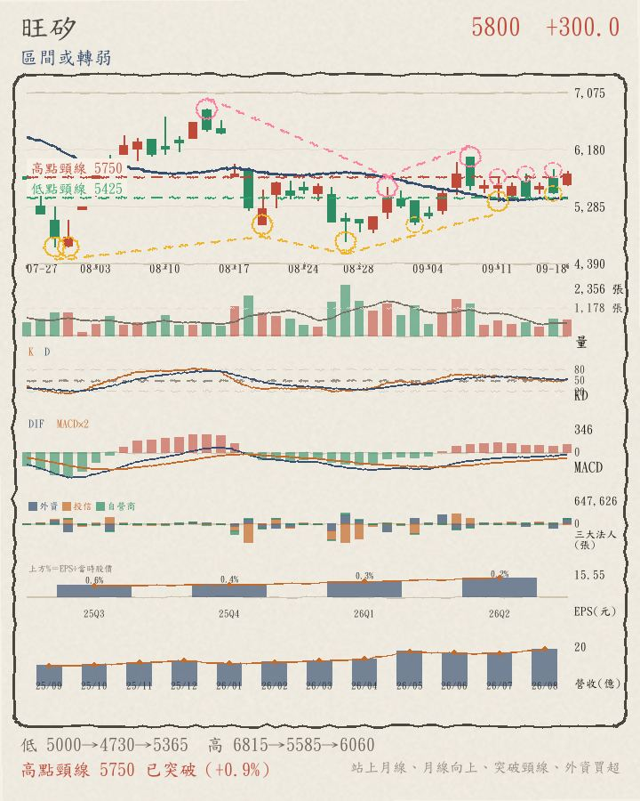
今天收紅、但成交量比平均少、站上月線 5421.5，已站上高點頸線 5750，轉折還沒走出明顯方向。
- 月線位置：收盤 5800 在月線 5421.5 之上；5 日線 5587 也在月線之上（短均在上）；月線向上、5 日線走平或向下
- 量能：成交量是 20 日均量的 0.73 倍，比 20 日均量少很多；收紅但量縮，量價背離
- 關鍵價位：高點頸線 5750 已站上；最近轉折高點 6060（低於 4.3%）；最近轉折低點 5365（高於 8.1%）
- 轉折結構：低點 5000、4730、5365 與高點 6815、5585、6060 都沒有明顯遞增，屬於區間震盪或轉弱；還沒確認的轉折低點 09-03 5000、09-17 5485；還沒確認的轉折高點 09-15 5800、09-17 5860（圖上虛線小圈）
底部墊高、未過前高 成交金額 39.93 億・全榜第 68 名（上櫃第 18 名）
好條件 5/8：站上月線、月線向上、底底高、突破頸線、相對大盤強
不好條件 1/8：外資賣超
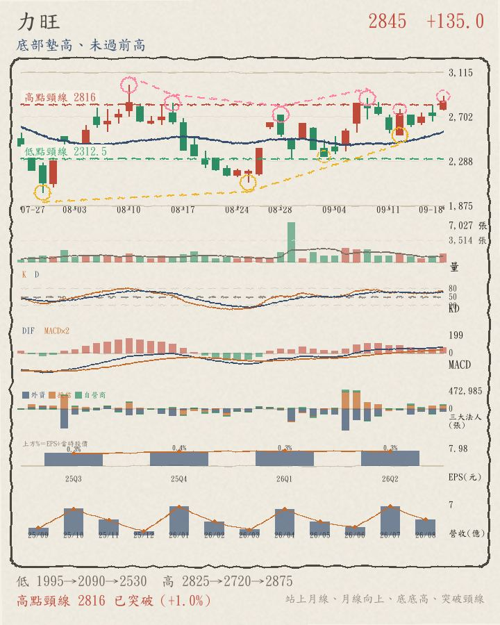
今天收紅、站上月線 2562，已站上高點頸線 2816，底部還在墊高（但高點沒同步創高）。
- 月線位置：收盤 2845 在月線 2562 之上；5 日線 2722 也在月線之上（短均在上）；月線向上、5 日線向上
- 量能：成交量是 20 日均量的 0.97 倍，跟 20 日均量差不多
- 關鍵價位：高點頸線 2816 已站上；最近轉折高點 2875（低於 1.0%）；最近轉折低點 2530（高於 12.5%）
- 轉折結構：低點 1995、2090、2530 墊高 26.8%（底底高），但高點 2825、2720、2875 沒有同步創高；還沒確認的轉折低點 09-03 2330；還沒確認的轉折高點 09-14 2770、09-18 2890（圖上虛線小圈）
高點墊高、底部不穩 成交金額 36.56 億・全榜第 69 名（上櫃第 19 名）
好條件 4/8：月線向上、頭頭高、相對大盤強、量價攻擊（收紅＋大量）
不好條件 3/8：跌破前低、在月線之下、外資賣超
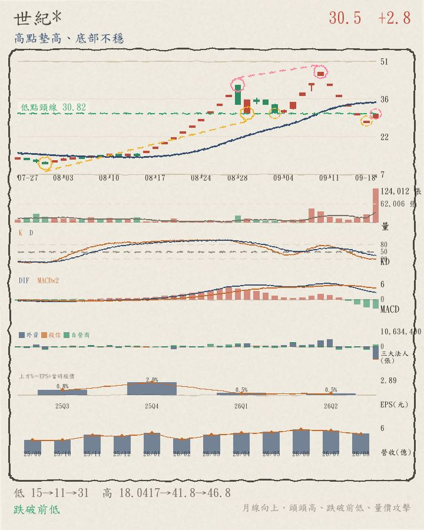
今天帶量收紅、跌破月線 35.095，高點還在墊高（但底部沒同步墊高）。
- 月線位置：收盤 30.5 在月線 35.095 之下；5 日線 32.24 也在月線之下（短均在下）；月線向上、5 日線走平或向下
- 量能：成交量是 20 日均量的 10.00 倍，比 20 日均量大不少；收紅又量增，量價配合
- 關鍵價位：最近轉折高點 46.8（低於 34.8%）；最近轉折低點 30.8（低於 1.0%）
- 轉折結構：高點 18.0417、41.8、46.8 墊高 159.4%（頭頭高），但低點 15.4197、11.3543、30.8 沒有同步墊高；還沒確認的轉折低點 09-03 30.85、09-17 27.75；還沒確認的轉折高點 09-18 30.5（圖上虛線小圈）
區間或轉弱 成交金額 35.58 億・全榜第 70 名（上櫃第 20 名）
好條件 4/8：站上月線、相對大盤強、外資買超、量價攻擊（收紅＋大量）
不好條件 1/8：月線下彎
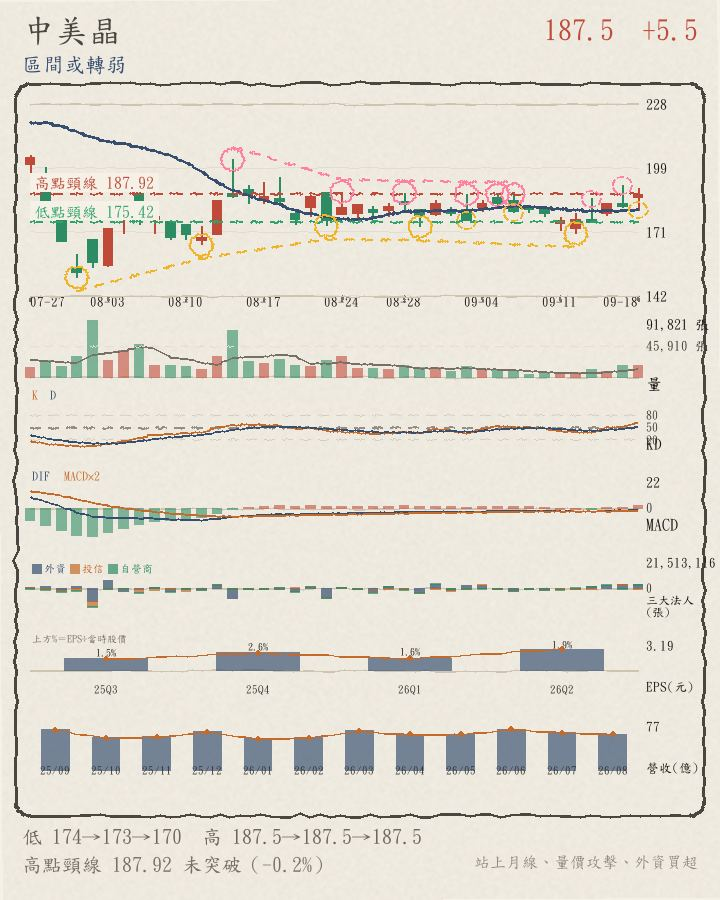
今天帶量收紅、站上月線 180.75，離高點頸線 187.92 還差 0.2%，轉折還沒走出明顯方向。
- 月線位置：收盤 187.5 在月線 180.75 之上；5 日線 181.1 也在月線之上（短均在上）；月線走平或向下、5 日線向上
- 量能：成交量是 20 日均量的 1.43 倍，比 20 日均量大不少；收紅又量增，量價配合
- 關鍵價位：高點頸線 187.92 還沒突破，差 0.2%；最近轉折高點 187.5（高於 0.0%）；最近轉折低點 170（高於 10.3%）
- 轉折結構：低點 173.5、173、170 與高點 187.5、187.5、187.5 都沒有明顯遞增，屬於區間震盪或轉弱；還沒確認的轉折低點 09-08 179.5、09-18 180.5；還沒確認的轉折高點 09-15 185.5、09-17 191.5（圖上虛線小圈）